무선설비기사 (2002-08-11 기출문제)
1과목: 디지털 전자회로
1. 다음 논리회로도의 출력 X 값은?
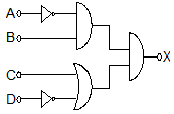
- A+B
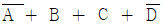
- AB+CD
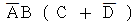
(정답률: 알수없음)

2. 아래 그림과 같은 반파 정류회로에 스위치 S를 사용하여 부하저항을 절단한 경우 콘덴서 C 에 충전된 AB간의 전압은? (단, 다이오드와 변압기는 이상적인 경우이다)
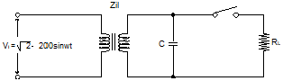
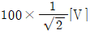
- 100×π[V]
- 100×√2[V]
- 100×2π[V]
(정답률: 알수없음)
3. 그림과 같은 스위칭용 슈미트 트리거 회로에서 S/W를 OFF 시키면 +5[V]로 충전하기 시작할 때의 시정수는? (단, R1 = 100[Ω], R2 = 10[㏀], C = 3.3[㎌])
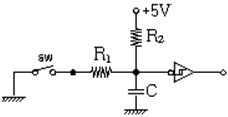
- 0.33 [ms]
- 3.3 [ms]
- 33 [ms]
- 330[ms]
(정답률: 알수없음)
4. 완충증폭기(buffer amp)에 관한 설명에서 가장 관계가 먼 것은?
- 발진기 출력과 부하 사이에 접속한다
- 주로 A급 증폭기를 이용한다
- 부하의 변동이 발진회로에 영향을 미치지 않도록 한다
- 회로구성은 이미터 접지 증폭회로로 되어있다
(정답률: 알수없음)
5. 이미터 플러우(emitter follow)증폭기에서 그림과 같은 전류신호를 얻었다면 어느방식에 해당하는가?
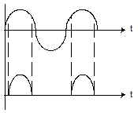
- A급
- B급
- C급
- AB급
(정답률: 알수없음)
6. 이미터(emitter) 접지회로에서 트랜지스터(transistor)의 hfe=50, hie=1[㏀]이고, 부하저항 RL = 0.5[㏀] 이면 전압증폭도는 대략 얼마나 되겠는가?
- -125
- -100
- -50
- -25
(정답률: 알수없음)
7. 다음 부울대수의 정리 중 틀린 것은?
- X(X+Y)=Y
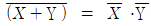
- X+YZ=(X+Y)(X+Z)
- X+XY=X
(정답률: 알수없음)
8. 연산 증폭기(Op-Amp)의 응용회로가 아닌 것은?
- 적분기
- 디지털 반가산 증폭기
- 미분기
- 아날로그 가산 증폭기
(정답률: 알수없음)
9. 그림과 같은 ECL 회로의 논리출력은? (단, Y, Y' 는 출력단자)
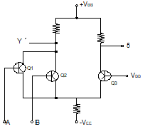
- Y: NAND, Y': AND
- Y: AND, Y': NAND
- Y: NOR, Y': OR
- Y: OR, Y': NOR
(정답률: 알수없음)
10. 10[㎒]반송파 신호가 정현파 신호에 의해 FM변조될 때 그 최대주파수 편이가 50[㎑] 이었다. 이 정현파 신호의 최대주파수가 500[KHz]일 경우의 대역폭은?
- 500[㎑]
- 1.1[㎒]
- 100[㎑]
- 2[㎒]
(정답률: 알수없음)
11. 그림에 표시한 회로에서 출력전압 Vo는 입력전압 Vs와 어떤관계인가?
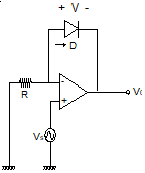
- Vo 는 Vs의 R배
- Vo 는 상용대수로 나타낸다
- Vo 는 Vs의 특정치에서 존재하고 나머지에서는 0이다
- Vo 는 Vs의 자연대수로 나타낸다
(정답률: 알수없음)
12. 푸시풀(push-pull)증폭기의 가장 큰 장점은?
- A급으로 동작을 시키면 크로스 오버(cross over)왜곡이 감소한다
- C급으로 동작시키면 출력도 크고 왜곡도 매우 감소한다
- 짝수 고조파가 소멸되므로 왜곡이 감소한다
- B급으로 동작시키면 입력이 없을 때 콜렉터 손실이 크다
(정답률: 알수없음)
13. PM파와 FM파의 스펙트럼 분포의 관계 중 틀린 것은?
- PM파와 FM파의 스펙트럼은 반송파를 중심으로 해서 위, 아래로 변조 주파수 간격으로 무한히 발생한다
- PM파의 변조지수 mp는 위상편이량 ΔΦ 와같으므로 변조 신호전압에 역비례한다
- PM파에서나 FM파에서 변조 신호전압을 높게하면 대역폭은 넓게 된다
- 변조주파수를 높게 하면 PM에서는 대역폭이 비례하여 커진다
(정답률: 알수없음)
14. 10진수 ' 3 '을 그레이코드로 변환하면?
- 0010
- 0100
- 0001
- 1010
(정답률: 알수없음)
15. 그림과 같은 T형 플립플롭을 접속하고 첫 번째 플립플롭에 1000[Hz]의 구형파를 가해주면 최종 플립플롭에서의 출력주파수는?
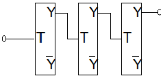
- 1000[㎐]
- 500[㎐]
- 250[㎐]
- 125[㎐]
(정답률: 알수없음)
16. 그림은 슈미트 트리거(Schmitt trigger)회로이다. 이 회로의 설명중 틀린 것은?
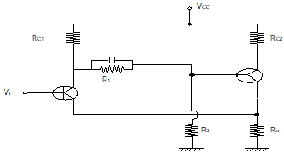
- 두 개의 안정 상태를 갖는회로이다
- 펄스 파형을 만드는 회로로는 사용하지 못한다
- 궤환효과는 공통에미터 저항을 통하여도 이루어진다
- 입력 전압의 크기가 on,off 상태를 결정하여 준다
(정답률: 알수없음)
17. 다음 중 발진주파수가 가정 안정적인 발진기는?
- 수정발진기
- 위인브리지 발진기
- 이상형 발진기
- 음향발진기
(정답률: 알수없음)
18. 다음회로는 어떤 플립플롭을 만들기 만들기 위해 설계한것인가?
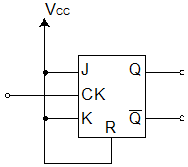
- SR플립플롭
- JK플립플롭
- T형플립플롭
- D형플립플롭
(정답률: 알수없음)
19. DRAM에 대한 설명 중 틀린 것은?
- 전원공급이 없으면 데이터는 지워진다
- 일정한 시간내에 리프레쉬를 해주어야 데이터가 보존된다
- 리프레쉬는 SRAM에도 있다
- 전원이 안정해야 데이터의 보존품질도 높아진다
(정답률: 알수없음)
20. 다음 발진회로에 대한 설명 중 틀린 것은?
- CR발진기는 낮은 주파수에 적합하다
- dynatron 특성을 이용한 것은 4극 진공관이다
- 부궤환시키면 발진주파수가 증가한다
- 발진조건은 β A = 1 이다
(정답률: 알수없음)
2과목: 무선통신 기기
21. 부궤환 증폭기에 있어서 입력측에 궤환되는 출력 전압율을 0.001, 궤환이 없는경우의 전압이득이 80[㏈]라 하면 이 증폭기의 이득은 얼마인가?
- 약 59 [㏈]
- 약 54 [㏈]
- 약 44 [㏈]
- 약 39 [㏈]
(정답률: 알수없음)
22. AM 수신기의 선택도를 향상시키기 위한 방법으로 가장 타당한 것은?
- 중간주파수를 높게 선정한다
- 고주파 증폭단을 둔다
- 중간 주파수 대역을 넓게 취한다
- 동조회로의 Q를 낮게한다
(정답률: 알수없음)
23. 레이다에서 펄스폭이 2[㎲]일 때 최소 탐지거리는?
- 3m
- 300m
- 2m
- 200m
(정답률: 알수없음)
24. 부하임피던스를 ZL 선로의 특성임피던스를 Zo라 할때 부하단에서의 전압반사계수는?
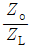
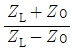
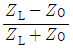
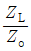
(정답률: 알수없음)
25. 무선 통신용 송신기에서 입력신호를 변조(Modulation)하는 가장 타당한 이유는?
- 전송매개체와 신호를 정합(Matching)시키기 위해
- 주파수를 높이기 위해
- 수신기에서 받은 신호를 변환할 필요가 없기 때문에
- 실제 구현시 회로가 간단하기 때문에
(정답률: 알수없음)
26. LC 발진기의 이상 현상과 관계 없는 것은?
- blocking 발진
- 인입션상
- 기생 진동
- piezo- 전기효과
(정답률: 알수없음)
27. SSB 수신기에서 자동 이득 조정이 곤란한 이유는?
- 측파대가 없으므로
- 신호 주파수가 적으므로
- 송신 출력이 적으므로
- 반송파가 없으므로
(정답률: 알수없음)
28. 통신위성체의 기본적인 구성이 아닌 것은?
- 안테나 구동 마운트
- 송수신계
- 자세 제어계
- 추진시스템
(정답률: 알수없음)
29. 다음 그림과 같은 방법으로 공중선의 실효 정전용량을 측정하고 할 경우 처음 S를 닫고 OSC를 조정하여 공중선에 공진 시킬 때 주파수가 2[㎒] 이였으며 S를 열고 Cs를 조정하여 공진상태로 하였을 때 그 주파수가 4[㎒]이었다면 이 공중선의 실효 정전용량은 얼마인가?
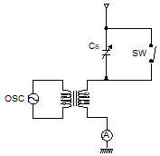
- 15[㎌]
- 5.4[㎌]
- 0.5[㎌]
- 0.15[㎌]
(정답률: 알수없음)
30. 스퓨리어스(Spurious)복사의 방지방법이 아닌 것은?
- 전력 증폭단의 여진전압을 높인다
- 국부 발진기의 출력에 포함된 고조파를 적게한다
- 동조회로의 Q를 높게한다
- 급전선에 트랩을 설치한다.
(정답률: 알수없음)
31. 송수신기의 발진방식으로 널리 사용되고 있는 방식중 PLL(Phase Locked Loop) 은 외부로부터 입력되는 신호의 위상을 추적하여 안정된 위상관계를 유지하는 신호를 얻는 회로이다. 다음중 PLL 회로구성에 필요한 회로는 어느 것인가?
- 전압제어 발진회로
- 샘플링 회로
- 주파수 체배회로
- 적분회로
(정답률: 알수없음)
32. 송신기의 점유 주파수 대역폭 측정법이 아닌 것은?
- 필터를 사용하는 방법
- 파노라마 수신기를 이용하는 방법
- 주파수 편이계를 사용하는 방법
- 스펙트럼 분석기를 사용하는 방법
(정답률: 알수없음)
33. 아래그림은 스펙트럼 직접확산(DS) 방식의 송신기 구성도이다. 빈칸 (A)에 들어갈 기능으로 알맞은 것은?
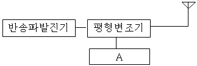
- 고주파 믹서(RF MIXER)
- PSK 변조기(Modulation)
- 중간주파 발진기(IF OSC)
- 의사잡음(PN) 발생기
(정답률: 알수없음)
34. 자세를 제어하기 위해서는 3개의 기준축이 설정된다. 이에 속하지 않는 것은?
- 롤(roll)축
- 요(yaw)축
- 토크(torque)축
- 피치(pitch)축
(정답률: 알수없음)
35. 다음 중 주파수 다이버 시티를 이용하는 방식은?
- 멀티캐리어 변조
- RAKE 수신기
- 인터리버
- 채널 부호화
(정답률: 알수없음)
36. 무선송신기의 송신주파수 변동을 줄이기 위한 대책이 아닌 것은?
- 발진기와 출력단 사이에 완충증폭기를 넣는다
- 발진기와 코일과 콘덴서의 온도계수를 상쇄하도록 부품을 선택한다
- 전원의 안정도를 높인다
- 발진기의 동조회로에 Q가 낮은 부품을 선택한다.
(정답률: 알수없음)
37. 통신용 전원장치의 정류가 효율을 구하는 식을 바르게 설명한 것은?
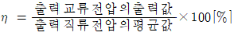
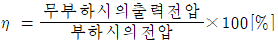
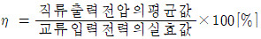
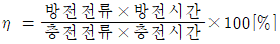
(정답률: 알수없음)
38. 축전지 극판은 여러 가지 사유로 극판의 만극이 일어난다. 다음중 관계없는 것은?
- 백색황산연이 생성될 때
- 과충전 및 과방전
- 45℃이상의 고온으로 사용할 때
- 묽은황산(희류산)의 비중이 너무 높을 때
(정답률: 알수없음)
39. 마이크로웨이브 통신에서 수신한 micro파를 중간 주파수로 변환하고 증폭한 다음 다시 micro파로 변환하여 전송하는 방식은?
- 무급전 중계방식
- 직접중계방식
- 검파중계방식
- 헤테로다인 중계방식
(정답률: 알수없음)
40. 잡음지수에 대한 설명중 틀린 것은?
- 무잡음 이상증폭기의 잡음지수는 1이다
- 실제 증폭기의 잡음지수는 1 보다 크다
- 증폭기의 입출력단에서의 잡음지수 =
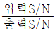
- 다단 증폭기의 종합잡음지수는 각 단 잡음지수의 합이다
(정답률: 알수없음)
3과목: 안테나 공학
41. 주파수가 다른 2개의 전파가 같이 전리층의 한점을 두전파가 지나갈 때 복사전력이 강한쪽의 전파에 의하여 다른쪽의 전파가 변조되어 강한쪽의 전파가 흔입되는 현상을 무엇이라 하는가?
- luxemburg effect
- Control point
- antipode effect
- Magnetic storm
(정답률: 알수없음)
42. 개구면 안테나에 해당되지 않는 것은?
- 렌즈 안테나
- 곡면 반사경 안테나
- 슬롯(slot) 안테나
- 유전체봉 안테나
(정답률: 알수없음)
43. 전자 호온으로 전파의 모우드를 천천히 변화시켜 다시 구면파를 Parabola 반사경으로 평면파로 변화시키고 동시에 비임의 방향을 거의 직각 방향으로 향하여 급전점 쪽으로 전파가 돌아오지 않도록 하고 있으며 주파수가 변화해도 지향성도 정재파비도 악화되지 않는 안테나는?
- Cassegrain 안테나
- Horn reflector 안테나
- parabola 안테나
- Polyrod 안테나
(정답률: 알수없음)
44. Beam antenna 는 수개의 반파장 안테나를 동일평면내에 규칙적으로 배치하는 일반적인 배열 간격은?
- λ
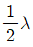
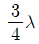
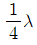
(정답률: 알수없음)
45. End fire helical antenna의 특징으로 맞는 것은?
- 이득이 낮다
- 반사파가 존재한다
- 지향성을 같는다
- HF대에 이용된다
(정답률: 알수없음)
46. 완전도체면에 수직으로 입사하는 파의 세기가
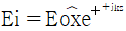
일 때 이 도체면에서 반사되는파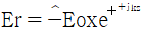
와의 합성에 의한 파의 세기는 얼마인가?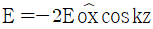
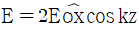
- E = -2Eox sin kz
- E = 2jEo sin kz
(정답률: 알수없음)
47. 다음중 비듬조 급전선의 특징이 아닌 것은?
- 안테나와 송신기 사이의 거리가 면 경우에 적합한 급전선이다
- 급전선의 정합장치가 필요하다
- 급전선상에 정재파가 존재하므로 손실이 크다
- 전송 효율은 동조급전선 보다 양호하다
(정답률: 알수없음)
48. 초단파 및 극초단파대의 전파가 가시거리의 지점보다 멀리 도달되는 경우 중 옳지 않은 것은?
- 라디오 덕트에 의한 경우
- 회절에 의한 경우
- 산란에 의한 경우
- 투과에 의한 경우
(정답률: 알수없음)
49. 반파장 다이풀 안테나로부터 복사전력이 81[W]이고, 최대 복사방향 7[km]지점에서의 전계강도는?
- 6[mv/m]
- 9[mv/m]
- 12[mv/m]
- 15[mv/m]
(정답률: 알수없음)
50. 전리층에서 단파대의 감쇠량과 관계 적은 것은?
- 입사각
- 전파의 간섭
- 평균층들 횟수
- 전자밀도
(정답률: 알수없음)
51. 단파대 통신에서 주간보다 야간에 낮은 주파수를 사용하는 이유는 무엇인가?
- 전리층에서의 전파 흡수가 작으므로
- 주간보다 야간의 전자밀도가 낮으므로
- 주간보다 야간의 전자밀도가 커지므로
- 낮은 주파수가 전파의 회절이 강하므로
(정답률: 알수없음)
52. 그림과 같은 정방사원 배열이 Broadside array가 되려면 이때의 조건은?
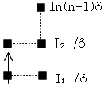
- I1=I2-=In, δ=0
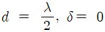
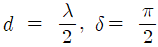
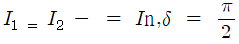
(정답률: 알수없음)
53. 다음 안테나 중에서 수평면에 대해 무지향성인 것은?
- λ/ 4수직접지 안테나
- 롬빅 안테나
- 야기 안테나
- 파라볼라 안테나
(정답률: 알수없음)
54. 장파 및 중파용 안테나와 관계 적은 것은?
- λ/4수직접지 안테나
- T형 안테나
- λ/2 doublet 안테나
- 역 L형 안테나
(정답률: 알수없음)
55.
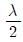
다이플 안테나의 실효높이(또는 실효길이)는?- 0.50λ
- 0.32λ
- 0.24λ
- 0.12λ
(정답률: 알수없음)
56. Loop 안테나의 설명중 틀린 것은?
- 8자형 지향특성을 갖는다
- 급전선과 정합이 쉽다
- 방향탐지 무선표지 또는 측정에 이용된다
- 소형으로 이동이 용이하다
(정답률: 알수없음)
57. 델린저(dellinger)현상의 특징으로 맞지않는 것은?
- 자외선의 이상(異常)증가로 발생한다
- 발생지역은 저위도 지방이 심하다
- 1.5 ~ 20[㎒]정도의 단파통신에 영향을 준다
- E층 또는 D층의 전자밀도가 감소한다.
(정답률: 알수없음)
58. 다음중 무손실 선로에서 얻어지는 조건은?
- R = 0 , G = ∞
- R = ∞ , G = 0
- R = ∞ , G = ∞
- R = 0 , G = 0
(정답률: 알수없음)
59. λ/4 수직접지 안테나에서 기저부 전류가 10[A]일 때 복사전력은 얼마인가?
- 365.6[W]
- 3656[W]
- 731.3[W]
- 7313[W]
(정답률: 알수없음)
60. 도파관의 전기적 특성 설명 중 틀린 것은?
- 특성임피던스는 관내의 전계강도 대(対) 자계강도의 비이다
- 자계(H)에 평형으로 위치한 저항판은 감쇄기로서 동작한다
- 관내를 전파하는 전자파의 파장은 자유 공간에서의 파장보다 항상길다
- 관내의 장애물이 전계에 영향을 미칠 때는 C 성분으로 작용한다.
(정답률: 알수없음)
4과목: 무선통신 시스템
61. CDMA 이동통신 시스템의 기본 구성증 이동통신 서비스를 제공하기 위하여 이동국에세 필요한 모든 연구적인 정보를 저장하고 있는 데이터 베이스는?
- 기지국(BS)
- 이동 통신 교환국(MSC)
- 홈 위치 등록 레지스터(HLR)
- 방문 위치 등록 레지스터(VLR)
(정답률: 알수없음)
62. 이동통신 교환국(MSC)에 수행되는 경우는?
- 같은셀(cell)내에서 상태가 좋지않은 경우에만 수행된다.
- 이동국이 한 셀에서 셀로 이동한 경우에만 수행된다.
- 이동국이 한 셀에서 다른 셀로 이동한 경우에만 수행된다.
- 가,나,다 모두 수행된다.
(정답률: 알수없음)
63. 다음의 마이크로 웨이브 중계방식중 펄스통신시 S/N비가 가장 좋은 중계방식은?
- 검파 중계방식
- 헤테로다인 중계방식
- 직접 중계방식
- 무급전 중계방식
(정답률: 알수없음)
64. 정지위성에 관한 설명으로 가장 적합한 것은?
- 지구 적도상공 약 7만 2천 km 궤도에서 지구의 공전속도와 같은 속도로 도는 위성
- 지구 적도상공 약 7만 2천 km 궤도에서 정지된 위성
- 지구 적도상공 약 3만 6천 km 궤도에서 지구의 자전속도와 같은 속도로 도는 위성
- 지국 적도상공 약 3만 6천 km 궤도에서 정지된 위성
(정답률: 알수없음)
65. 마이크로파 장치에서 주파수 체배용으로 사용되는 것은?
- TUNNEL DIODE
- SILICON POINT CONTACT DIODE
- VARACTOR DIODE
- SILICON JUNCTION DIODE
(정답률: 알수없음)
66. 디지털 위성통신방식의 특징으로 맞지 않는 것은?
- 다원접속시 전송용량을 증대시킬 수 있다.
- 레벨변동을 방지할 수 있다.
- ISDN과의 정합이 용이하다.
- 속도가 서로 다른 신호의 다중화가 가능하다.
(정답률: 알수없음)
67. 이동전화의 무선환경에 대한 설명이 아닌 것은?
- 전파경로 손실은 주파수가 높아질수록 또는 전파경로가 길어질수록 증가한다.
- 단말기에 수신된 전파는 다중경로를 통한 전계강도의 합이 되므로 다중경로 페이딩이 발생한다.
- 단말기가 이동중 수신한 페이딩 신호는 주기적인 형태를 갖는다.
- 속도가 서로 다른 신호의 다중화가 가능하다.
(정답률: 알수없음)
68. 레이다에서 마이크로파(microwave)를 이용하는 이유가 아닌 것은?
- 분해능(resolution)을 좋게 할 수 있다.
- 직접파 방식이므로 정확한 거리의 측정이 가능하다.
- 적은 목표에도 잘 반사한다.
- 전파의 회절현상을 이용하여 원거리의 목포를 쉽게 측정할 수 있다.
(정답률: 알수없음)
69. 무선통신방식의 최대 결정으로 보는 것은?
- 간섭
- 통달거리
- 건설비
- 회선용량
(정답률: 알수없음)
70. 다음 DSB와 비교하여 SSB의 결정이 아닌 것은?
- 송신기의 회로구성이 복잡하다.
- 송신주파수 안정도가 필요하다.
- 수신부에 동기장치가 필요하다.
- 송신전력이 커야된다
(정답률: 알수없음)
71. 시분할(TDM)식 디지털 무선송수신기의 전승품질은 보통 무엇으로 표시하는가?
- 오부호율(BER)
- 반송파대 잡음비(C/N)
- dBrnc0
- 신호대 잡음비(S/N)
(정답률: 알수없음)
72. 셀(CELL)방식의 이동통시에서 문제점으로 가장 영향이 적은 것은?
- 대류권 산란
- 다경로 페이딩(multipath fading)
- 채널관 간섭(inter channel interference)
- 동일채널 간섭(co-channel interference)
(정답률: 알수없음)
73. 다음의 INMARSAT 위성에 대한 설명 중 맞는 것은?
- 국제 공중통신역무를 주목표로 한다.
- 해상에서의 조난 및 인명의 안전에 관한 통신을 목적으로 한다.
- 지구관측을 통해서 지상의 자원조사 감시 및 탐사등을 목적으로 한다.
- 일기예보를 정확히 하기 위한 기상관측이 목적이다.
(정답률: 알수없음)
74. 위성통신에서 이용되는 다원접속방식중 TDMA와 거리가 먼 것은?
- 다수의 지구국이 하나의 위성을 이용하는데 있어 시간을 분할하여 각 지구국에 접속시간을 배정하는 방식이다.
- 반송파들의 상호변조에 위한 간섭이 늘어나는 단점이 있다.
- 위성중계기의 전 대역을 모든 지구국이 공유할 수 있어 효과적이다.
- 저속시간의 할당을 통해 이용효율을 높이기 위한 방식이다.
(정답률: 알수없음)
75. 다음 전자파에 관한 기술 중 옳지 않는 것은?
- 전장과 자장이 서로 직각을 이루면서 퍼져 나간다.
- 전자파는 자유공간에서 직진한다.
- 전자파는 종파이다.
- 전자파의 전파속도는 빛의 속도와 거의 같다
(정답률: 알수없음)
76. 인공위성을 이용하여 위치를 측정하는 장치인 것인?
- DECCA
- LORAN
- OMEGA
- GPS
(정답률: 알수없음)
77. 다음 설명 중 도약거리(SKIP DISTANCE)와 거리가 먼 것은?
- 단파대에서 많이 생긴다.
- 전리층 반사파가 최초로 지상에 도달하는 점과 송신점 사이의 거리를 뜻한다.
- 주간과 야간에 따라서 도약거리가 다르다.
- 도약거리는 사용주파수와 전리층에 입사되는 정도에 관계없다.
(정답률: 알수없음)
78. 증폭기에서 발생하는 일그러짐(DISTORTION) 현상의 원인이 아닌 것은?
- 비직선 일그러짐
- 주파수 일그러짐
- 잡음(NOISE)
- 위상 일그러짐
(정답률: 알수없음)
79. 수신기의 이상적 BPF 대역폭이 1[MHz]이고, 백색잡음의 양측 출력 스펙트럼 밀도는 0.1[㎼/㎐]이고, 백색잡음의 양측 출력 스펙트럼 밀도는 0.1[㎼/㎐]이다. 수신된 잡음전력[W]은?
- 0.1
- 0.2
- 1
- 2
(정답률: 알수없음)
80. 가로폭 39[cm]이 TV수상기에서 올바른 상의 우측 3[CM]위치에 고우스트(ghost) 현상이나타날 경우, 직접파와 반사파의 통로차는 얼마 정도인가? (단, 하나의 수평주사가 기간은 52[㎲]이다.)
- 약 20[m]
- 약 120[m]
- 약 300[m]
- 약 1200[m]
(정답률: 알수없음)
5과목: 전자계산기 일반 및 무선설비기준
81. 다음 중 시뮬레이션에 가장 편리한 고급 언어는 무엇인가?
- FORTRAN
- COBOL
- PASCAL
- SIMSCRIPT
(정답률: 알수없음)
82. 파이프라인에 의한 이론적 최대 속도 증가율을 내지 못하는 주된이유가 아닌 것은?
- 병목현상
- 자원회피
- 데이터의존성
- 분기곤란
(정답률: 알수없음)
83. 8bits를 사용하여 부호와 절대치 표현방법으로 -13(10진수)을 올바르게 표현한 것은?
- 00001101
- 10001101
- 100000010
- 11010000
(정답률: 알수없음)
84. 부동소숫점 연산에서 정규화(normalize)시키는 이유는?
- 수자표시를 간결하기 위하여
- 연산속도를 증가시키기 위하여
- 유효숫자를 늘리기 위하여
- 수치계산을 편리하게 하기 위하여
(정답률: 알수없음)
85. 프로그램이 수행되는 도중에 인터럽트가 발생되면 현 사이클의 일을 끝내고 인터럽트 처리를 한다. 이때 인터럽트를 끝내고 프로그램이 수행될 수 있도록 현상태를 보관하는 장소의 위치와 관계 있는 것은?
- 상태레지스터
- 프로그램계수기
- 스택포인터
- 인텍스레지스터
(정답률: 알수없음)
86. 아날로그 컴퓨터의 특징에 대한 설명중 틀린 것은?
- 연산형식은 미분, 적분이다
- 주회로는 논리회로이다
- 출력형식은 그래프나 곡선으로 표현한다
- 입력형태는 길이, 전압, 전류등을 사용한다
(정답률: 알수없음)
87. 다음 중 주파수 허용편차의 주파수대별 구분중 틀린 것은?
- 535[㎑] ~ 1606.5[㎑]
- 4[㎒] ~ 29.7[㎒]
- 29.7[㎒] ~ 270[㎒]
- 470[㎒] ~ 2450[㎒]
(정답률: 알수없음)
88. 전파연구소장은 특별한 사유가 없는 한 전자파 적합등록 신청서를 받은날로부터 며칠이내에 처리하여야 하는가?
- 3일
- 5일
- 10일
- 25일
(정답률: 알수없음)
89. 다음 기계어의 설명중 잘못된 것은?
- 숙달된 사용자가 아니면 프로그램하기가 어렵다
- 명령이나 수식을 연산하기 쉬운 기호를 사용하므로 기호언어라고 한다
- 기종마다 다른 고유의 명령코드를 사용한다
- 프로그램의 추가, 변경, 수정이 불편하다
(정답률: 알수없음)
90. 전자파 적합등록을 하여야 하는 기기가 전자파 방사 또는 전자파 전도에 의한 영향으로부터 정상적으로 동작할 수 있는 능력을 무엇이라 하는가?
- 전자파복사
- 전자파 강도
- 전자파내성
- 전자파 장해
(정답률: 알수없음)
91. 다음 중 스퓨리어스 발사에 포함되지 아니하는 것은?
- 고조파 발사
- 기생발사
- 상호변조 및 주파수 변환 등에 의한 발사
- 대역외 발사
(정답률: 알수없음)
92. 외국의 법인이 개설할 수 있는 무선국은?
- 실험국
- 무선항행육상국
- 항공국
- 선박지구국
(정답률: 알수없음)
93. 비가중코드(Unweighted code)로써 1비트씩 변화하면서 새로운 코드를 생성하므로 A/D변환기의 입출력코드로 널리사용되는 것은?
- BCD코드
- 그레이코드
- 10진코드
- 2421코드
(정답률: 알수없음)
94. SRAM의 용량이 1024byte 일 경우 어드레스선의 개수는 몇 개인가? (단, 데이타선은 8선이다)
- 4
- 9
- 10
- 20
(정답률: 알수없음)
95. 전파이용에 관한 중 장기계획에 포함되지 않는 것은?
- 주파수대역별 이용가치
- 주파수 대역별 용도
- 새로운 전파자원의 개발현황
- 중ㆍ장기 전파자원의 수요전망
(정답률: 알수없음)
96. 텔레비전 방송국의 무선설비 점유주파수 대폭의 허용치는 얼마인가?
- 2[㎒]
- 4[㎒]
- 6[㎒]
- 8[㎒]
(정답률: 알수없음)
97. 여러명의 사용자가 사용하는 시스템에서 컴퓨터가 사용자들의 프로그램을 번갈아 가면서 처리해 줌으로써 각 사용자가 각자 독립된 컴퓨터를 사용하는 느낌을 주는 시스템과 가장 관계가 깊은 것은?
- on-line system
- batch file system
- dual system
- time sharing system
(정답률: 알수없음)
98. “점유 주파수대폭이라 함은 변조의 결과로 생기는 주파수대폭이 하한주파수 미만의 부분과 상한주파수를 초과하는 부분에서 각각 발사되는 평균전력이 따로 정하는 경우를 제외고 각각 ( )%와 같은 주파수대폭을 말한다. ” 위의 ( ) 내에 들어갈 것은?
- 0.5
- 5
- 10
- 15
(정답률: 알수없음)
99. 수신설비 성능의 조건으로서 적합하지 않은 것은?
- 선택도가 적을 것
- 감도가 충분할 것
- 내부 잡음이 적을 것
- 명료도가 충분할 것
(정답률: 알수없음)
100. 무선설비의 기기중에 형식등록을 하여야 하는 기기는?
- 선박국용 무선방위측정기
- 경보자동 전화장치
- 네비텍스 수신기
- 라디오부이의 기기
(정답률: 알수없음)